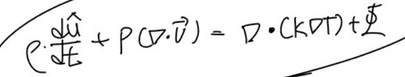
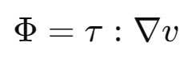
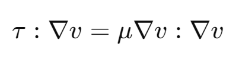

[Fluid mechanics] #Viscous dissipation rate
Ch4 Differential relations in fluid flow에서
Energy equation을 증명하였다.
그 과정속에서 viscous dissipation rate에 대해서 잠깐 언급하였다.
Energy equation 최종 모습을 보면

좌항 첫번째: 시간에 따른 유체 내부에너지 변화량
좌항 두번째: 공간 좌표에 따라 압력이 바끼고 그때 의 속도기울기를 곱하여 압력이 한 일
우항 첫번째: 외부에서 혹은 내부에서 들어오고 나가는 시간에 따른 열의양
그리고 마지막항이 지금 우리가 이야기를 나눌
Viscous dissipation rate이다.
말 그대로 점성 소산이다.
소산이란 말은 lose 잃다, enegry를 잃었다는 말이다.
왜??why ??점성에 의해서
아마 유체라서 감이 덜오는 것일 꺼다.
우리가 어떤 무거운 물건을 경사에서 끌고 올라간다고 가정해보자
.
당연히 바퀴가 달린 수레위에서 끌면 더 잘끌리고 E를 덜 사용하고도
물건을 경사위로 올릴 수 있다.
즉 마찰력에 의한 E손실이 적기 때문이다.
유체도 같다. 유체와 유체사이에 점성(마찰력)이 작용하여,
에너지가 끊임없이 뺏긴다는 것이다.
TMI
마찰이 발생하는 것은 엔트로피가 증가하는 방향이기 때문에,
자연현상적으로 당연히 발생하고
irrversible 그 소산된 에너지를 다시 끌어모을 수는 없다.
그렇다면 점성에 의한 에너지 손실의 크기를 어떻게 나타낼까??
Dissipation rate는 stress tensor 와 속도 gradient의 내적이다.

살짝 애매하게 느껴질 것이다. 왜? 저거지?
일단 단위를 살펴보자.
Shear tensor = N/m^2
Velocity Gradient = 1/s
즉 N/(m^2 s)
잘생각해보면 우리가 전에 구한식은 단위부피 당 에너지의 시간에 따른 변화율 이다.
따라서 단위는 N/(m^2 s) 임을 알 수 있다. E = [N m] 이기 때문에
+
위 식에서 압력이 한일 term을 보면 정확히 형태가 동일하다.
뿐만아니라 압력과 shear stresss는 단위도 같고 개념도 같다.
단위면적당 가해진 힘이기 때문이다.
혹시 백터 가운데 " : " 의 의미가 햇갈리시면?
'점곱'이라고 부르고
3x3 백터 두개가 있는 경우,
![[Fluid mechanics] #Viscous dissipation rate](./images/img-003.png)
각 요소별로 곱한후 나온 내적값을
전부다 더해줍니다.
![[Fluid mechanics] #Viscous dissipation rate](./images/img-004.png)
이제, Shear dissipation rate 개념을 조금 감 잡았으니,
전개해서 풀면
다음과 같다.
Dissipation rate =
![[Fluid mechanics] #Viscous dissipation rate](./images/img-005.png)
여기서 만약 Newtonian fluid라면???

우리는 stress term들을 전부 gradient로 고칠 수 있다.
따라서, 전개하면
![[Fluid mechanics] #Viscous dissipation rate](./images/img-007.png)
만약에 incompressible인 경우는
앞에있는 gradient와 속도의 내적 = 0 이게 되므로
뒤에 제곱 term들만 남게 된다.
따라서 incompressible Newtonian fluid에서는
항상
Dissipation rate
가 양수이다.
이제 왜 Ch4 에서 이렇게 식을 변형 시켜줬는지 이해할 수 있을 것이다.
![[Fluid mechanics] #Viscous dissipation rate](./images/img-008.png)